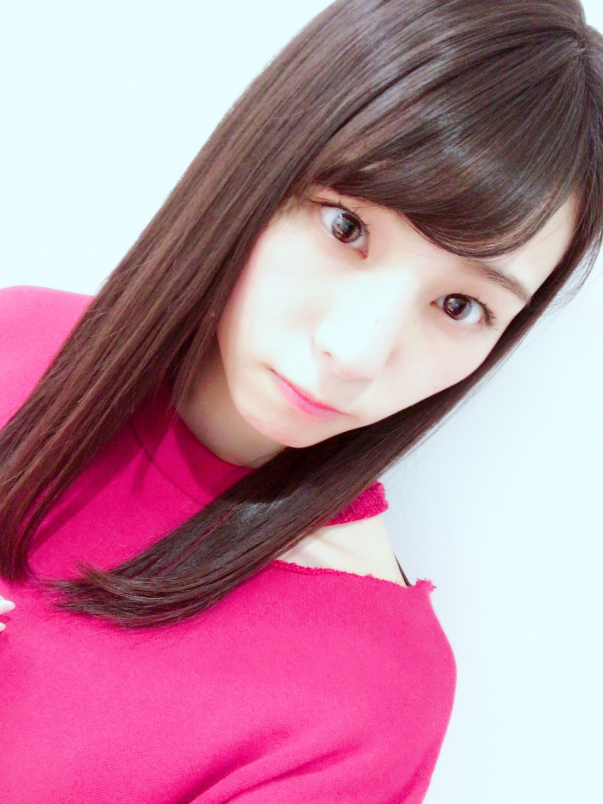
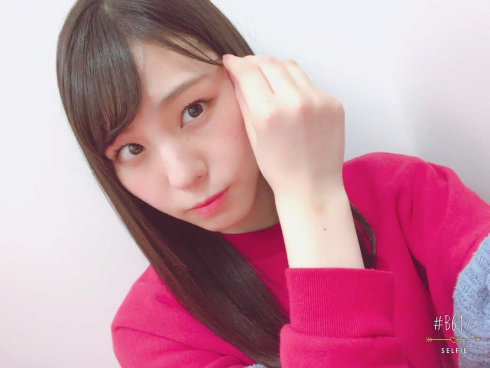
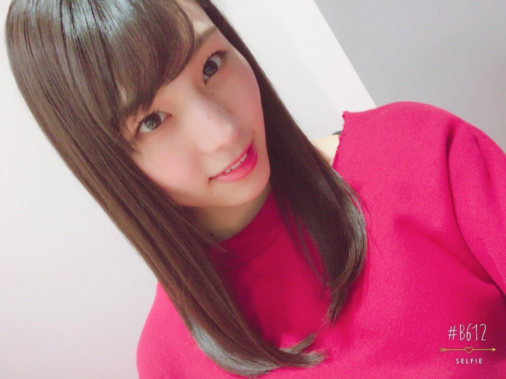

| 2017/04 08 Sat | カレーにソース？_(．．*)vol.175 |
みなさんこんばんはー！
19歳 相楽伊織です！

ブログや755のコメントで
｢アンダーライブ行くよ｣って
たくさんの方が報告してくれて
すごく嬉しいし
本当に頑張れます(^-^)/
絶対いいものにしたいな。
頑張ります！！
今日ののぎ天2は
生放送でアンダーライブ決起集会をしました！
今までのアンダーライブの歴史を
振り返りつつ
その時の思い出をみんなで話したり
クイズコーナーをやったりして
予定時間を越えちゃったけど
楽しく出来ましたヽ(*^^*)ノ
ただ話を振られても
何も考えられなくて
ちゃんとしたこと言えなくて
そこは本当に申し訳なかったです。。
すみませんでした(><)(><)

明日は17th初の個別握手会♪
お洋服はどうしようかな。。
髪型はどうしようかな。。

4.5部です！
お待ちしておりますm(__)m
と言うか待っててねっ
前回のブログで沢山の応援歌
コメントで教えて下さって
ありがとうございました(^-^)/
 のぎ天2
のぎ天2
来週はアンダーライブのリハ風景とか
裏側ドキュメントなどが
放送されますので
そちらも是非チェックして下さい♪
月刊エンタメ 発売中
(真夏さんリスペクト軍団)
i o r i .

コメント(260)
2017/04/08 22:36